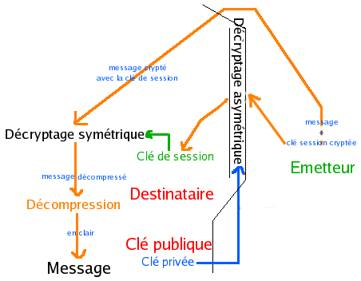

3.2.6. GnuPG et TrueCrypt
Qu'est-ce que GnuPG et TrueCrypt ?
Le principe de GnuPG est simple...


Les clés fonctionnent grâce à des fonctions "à sens unique", c'est à dire des fonctions mathématiques qui ne permettent pas de retrouver l'antécédent. De plus, la clé privée est elle-même cryptée par un mot de passe.
Le principe de TrueCrypt est encore plus simple !
TrueCrypt permet de crypter des parties de disque dur, à l'aide d'un mot de passe. Ces dernières peuvent ensuite être déplacées, copiées, envoyées...
Et, contrairement à de nombreux logiciels, il a été prouvé que TrueCrype ne contient pas de Backdoor !